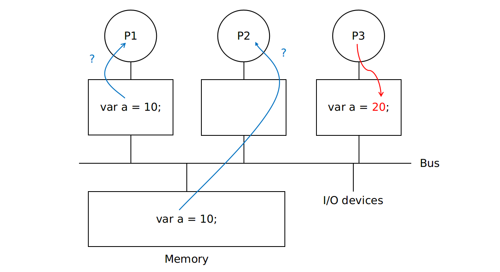

Advanced
Barriers
Busy-waiting
Use a shared counter protected by the mutex
1 | pthread_mutex_lock(&barrier mutex); |
Semaphores
Use two semaphores
count_sem = 1protects the counterbarrier_sem = 0blocks threads that have entered the barrier
1 | /* Shared variables */ |
Condition Variables
a data object that allows a thread to suspend execution until a certain event or condition occurs
- When the event or condition occurs, another thread can signal the thread to “wake up”
- A condition variable is always associated with a mutex
pthread_cond_t
pseudocode
1 | lock mutex; |
pthread_cond_init
1 | int pthread_cond_init(pthread_cond_t *restrict cond, |
Ref: http://man7.org/linux/man-pages/man3/pthread_cond_destroy.3p.html
pthread_cond_signal
Unblock one of the blocked threads
1 | int pthread_cond_signal(pthread_cond_t *cond); |
Ref: http://man7.org/linux/man-pages/man3/pthread_cond_signal.3p.html
pthread_cond_broadcast
Unblock all of the blocked threads
1 | int pthread_cond_broadcast(pthread_cond_t *cond); |
Ref: http://man7.org/linux/man-pages/man3/pthread_cond_broadcast.3p.html
pthread_cond_wait
- Unlock
mutex - Block thread until another thread’s call to
pthread_cond_signalorpthread_cond_broadcast - When the thread is unblocked, it reacquires the mutex
1 | int pthread_cond_wait(pthread_cond_t *restrict cond, |
Upon successful completion, a value of zero shall be returned;
Ref: http://man7.org/linux/man-pages/man3/pthread_cond_timedwait.3p.html
pthread_cond_destroy
1 | int pthread_cond_destroy(pthread_cond_t *cond); |
Ref: http://man7.org/linux/man-pages/man3/pthread_cond_destroy.3p.html
Example
1 | /* Shared */ |
while: 當 pthread_cond_wait 失敗後重新 wait
Read-Write Locks
A read-write lock is somewhat like a mutex except that it provides two lock functions
- Locks the read-write lock for reading
- Locks the read-write lock for writing
Multiple threads can simultaneously obtain the lock by calling the read-lock function, while only one thread can obtain the lock by calling the write-lock function
- 當有任何 thread 持有 reading lock，其他想要獲得 writing lock 的 thread 會被 block 住
- 當某個 thread 持有 writing lock，其他想要獲得 reading lock 的 thread 會被 block 住
pthread_rwlock_init
1 | int pthread_rwlock_init(pthread_rwlock_t *restrict rwlock, |
Ref: http://man7.org/linux/man-pages/man3/pthread_rwlock_destroy.3p.html
pthread_rwlock_rdlock
1 | int pthread_rwlock_rdlock(pthread_rwlock_t *rwlock); |
Ref: http://man7.org/linux/man-pages/man3/pthread_rwlock_rdlock.3p.html
pthread_rwlock_wrlock
1 | int pthread_rwlock_wrlock(pthread_rwlock_t *rwlock); |
Ref: http://man7.org/linux/man-pages/man3/pthread_rwlock_wrlock.3p.html
pthread_rwlock_unlock
1 | int pthread_rwlock_unlock(pthread_rwlock_t *rwlock); |
Ref: http://man7.org/linux/man-pages/man3/pthread_rwlock_unlock.3p.html
pthread_rwlock_destroy
1 | int pthread_rwlock_destroy(pthread_rwlock_t *rwlock); |
Ref: http://man7.org/linux/man-pages/man3/pthread_rwlock_destroy.3p.html
Issue
Slow may due to:
- Write miss
- Read miss
- Cache Coherence
Cache Coherence

cache 在某個 process 寫入後應要使其他 process 也看到新的值
How to fix with a bus: Coherence Protocol
- Use bus to broadcast writes or invalidation
- Simple protocols rely on presence of broadcast medium
False Sharing
在多個 Core 的架構下，因為 Cache line 彼此獨立，若兩個 Core 都載入某一段相同的 memory，且當 Core 1 更新某個值，會造成 Core 2 讀取某個變數的值時會 cache miss 而重新載入 memory，即使讀取的變數不是 Core 1 更新的變數。
False Sharing 最常在 SPMD (Single-Program, Multiple-Data) 的平行化程式中遇到，因為 Array 在記憶體中是連續的，且載入時會因為 Spatial Locality 而載入到 Cache Line 中，因此很容易造成 False Sharing。
Solution: Array Padding，避免載入到別的 Core 需要處理的資料到 Cache line 中。